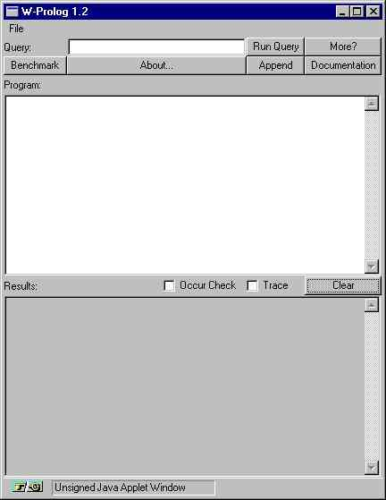
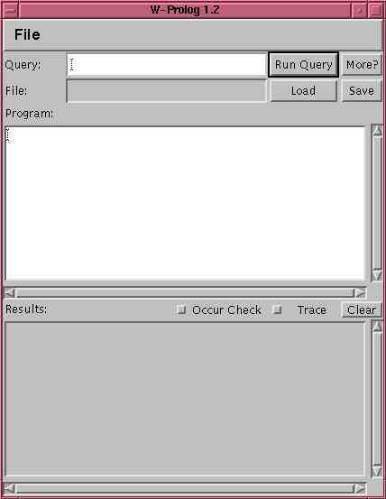
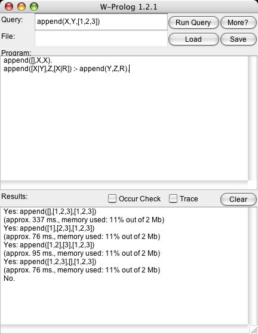

W-Prolog
Table of Contents
1. Introduction
1.1 The Distribution
2. The Language
3. Usage
3.1 Embedding the W-Prolog Engine
4. The User interface
4.1 Applet
4.2 Application
5. Comments
5.1 Bugs
5.2 Further Work
6. Related Work
Appendices
A. History
B. Legalese
|
New version (1.2.1) fixes bug with the unification of
a variable to itself.
1. Introduction
W-Prolog is an interpreter for a Prolog like language implemented in Java.
The implementation is extremely portable and can be run as an
applet under Java-capable web browsers.
W-Prolog has a nicer user interface than most Prolog systems (which typically
provide a command line interface). It provides simple tracing and has
an (optional) occur check.
The W-Prolog system is small and comparatively simple. However it is not
particularly fast.
W-Prolog has been:
1.1 The Distribution
W-Prolog is available as source code
(WProlog.java), and
as a zip file containing class files
(wp.zip).
NEW W-Prolog is now also available as a clickable jar file
(wp.jar)
If you want to try W-Prolog now (and are viewing this with a Java
capable browser) just click the button below.
2. The Language
The language is given by the following simple grammar:
Program ::= Rule | Rule Program
Query ::= Term
Rule ::= Term . | Term :- Terms .
Terms ::= Term | Term , Terms
Term ::= Number | Variable | AtomName | AtomName(Terms)
| [] | [Terms]
| [Terms | Term]
| print(Term)
| nl
| eq(Term , Term)
| if(Term , Term , Term)
| or(Term , Term )
| not(Term)
| call(Term)
| once(Term)
Number ::= Digit | Digit Number
Digit ::= 0 | ... | 9
AtomName ::= LowerCase | LowerCase NameChars
Variable ::= UpperCase | UpperCase NameChars
NameChars ::= NameChar | NameChar NameChars
NameChar ::= a | ... | z | A | ... | Z | Digit
Comments begin with a % and terminate at the end of the line or
begin with /* and terminate with */.
Note that as of version 1.2 code of the form p(X) :- X will not work.
Instead, use the new builtin call as follows:
p(X) :- call(X).
Note also, that the clauses defining a predicate need to be contiguous.
So, for example, use:
a :- b.
a :- c.
b :- defn.
c :- defn.
and not:
a :- b.
b :- defn.
a :- c.
c :- defn.
3. Usage
W-Prolog can be run as an applet or as a standalone application.
It can also be embedded and called from another program.
To run W-Prolog as an applet construct an HTML file containing the tag:
<center>
<h1>W-Prolog</h1>
<applet code=WProlog.class width=120 height=65>
</applet>
</center>
and use netscape (or internet explorer) to view this file.
Alternatively, just use the address
http://winikoff.github.io/software/wp/.
To run W-Prolog as a standalone application you need to have the Java Development
Kit (JDK). The command is java WProlog where
the directory containing the class files must be in the
CLASSPATH.
3.1 Embedding the W-Prolog Engine
The W-Prolog inference engine can be called from Java code.
The program Go.java shows how to do this.
4. The User interface
The user interface is different in applets. We address the common aspects first.
The top row (labeled Query) contains a text field into which a Prolog
atom can be typed (for example append(X,Y,[1,2,3,4]) - note that no
terminating full stop is necessary). The first button (Run Query)
will start the query running and the second (More) will seek
alternative solutions to a succesful query.
The top text area (labeled Program) contains the program text.
The bottom text area (labeled Results) contains the output from
W-Prolog. The button marked Clear clears the results text area.
The two toggles (Occur Check and Trace) control
respectively whether the occur check is performed and whether tracing
information is output.
To quit W-Prolog either click on the close window button (if your window
manager supplies one or if you're using Windows) or select Quit
from the menu.
4.1 Applet

Applets have a number of limitations - for example they can not write to files
or open network connections to arbitrary machines.
As a consequence (and due to a number of bugs in netscape) the applet
version of W-Prolog doesn't allow loading and saving of programs.
The applet version of W-Prolog has four buttons:
- Benchmark:
- Runs the standard naive reverse benchmark. The formula
496 / runtime gives the speed in logical inferences per
second.
- About...:
- Puts some brief information about the author
(Michael Winikoff)
and version (currently 1.2) into the program text area.
- Append:
- Puts a simple append program into the text area.
- Documentation:
- Opens a browser window on this file.
4.2 Application

When run as a standalone application the four buttons are replaced by
file loading and saving capabilities. The name of the file is
shown in a (non-editable) text field (labeled File:).
The button Load brings up a standard file requester and loads
the selected file. The Save button writes the program to
the file from which it was loaded.
5. Comments
It is recomended that W-Prolog be run as a standalone application.
Earlier versions of W-Prolog supported loading files in the applet version.
This worked flawlesly when run with Sun's appletviewer but refused to work
under netscape.
Another example of undesired behavior under netscape concerns threads.
Each query in W-Prolog runs in its own thread.
This means that a long running (or non terminating) query won't freeze
the interface (although it will slow subsequant queries down).
This works, but not under netscape.
5.1 Bugs
No known current bugs.
Please let me know if you
find any.
5.2 Further Work
At the moment I don't anticipate having time to extend W-Prolog in the near
future.
Future extensions would include:
- Arithmetic
NEW
Joachim Wolf Laudien has suggested that the following predicates
could be used to provide arithmetic:
sum(X, zero, X).
sum(X, succ(Y), succ(Z)) :- sum(X, Y, Z).
product(X, zero, zero).
product(X, succ(Y), Z) :- sum(X, P, Z), product(Y, X, P).
- Characters and strings
- Input
- Graphics and other access to Java libraries (eg. networking)
- Iterative Deepening
- Example Programs
6. Related Work
Paul Tarau and
Bart Demoen have written a Prolog interpreter in Java.
Their interpreter compiles Prolog (and is faster!) but doesn't have a GUI.
Their work is available at
http://www.cs.kuleuven.ac.be/~bmd/PrologInJava/.
Another Prolog interpreter in Java can be found
here.
Unfortunately, it appears to use Lisp-ese syntax and has no documentation!
Update:
Since I wrote W-Prolog and this page a number of other logic programming languages
implemented using Java have appeared (including LL, JavaLog, Jinni, and
MINERVA). You can find links to all of these
Robert Tolksdorf's
page on
Languages for
the Java VM.

A. History
Version 1.0
Initial release in October 1996. Ran applet in browser window.
My first Java program, written in a little over a week.
W-Prolog 1.0 was the first Prolog interpreter written in Java.
It's release was followed by the release of Demoen and Tarau's compiler (which,
in fact, was compiling and running Prolog code in August 1996).
Version 1.1
- Changed user interface.
- Added ability to save file if run as an application.
- If run as an application W-Prolog uses a file requester for
loading and saving.
- If run as an applet W-Prolog starts up in its own window.
- Changed default font.
- Removed all options.
- Fixed performance bug - the occur check was always being performed ...
- Fixed bug: if the query can't be parsed then the part of the
query which caused the problem is highlighted.
Previously, if the query had a syntax error then the program
would be highlighted.
- Some optimisation - looking up clauses is now done once rather than
at each execution step.
- Added indication of memory being used.
- Changed Engine to make embedding in another application
easier.
Version 1.2
- Changed user intergace (again!) -- removed loading option in applets.
- Fixed bug with indexing.
- Added call.
- Added handling of QUIT event.
Version 1.2.1
- Fixed bug where a variable unified to itself created a circular
binding rather than doing nothing.
B. Legalese
Feel free to use W-Prolog for private or academic (research or educational)
use.
For other use (for example, including W-Prolog on CD or archive) please
contact me.
When making copies, please keep all files together (including this
documentation) and do not change anything.
Accesses since June, 1:
![[Counter]](http://fastcounter.linkexchange.com/fastcounter?214636+429279) LE FastCounter
LE FastCounter